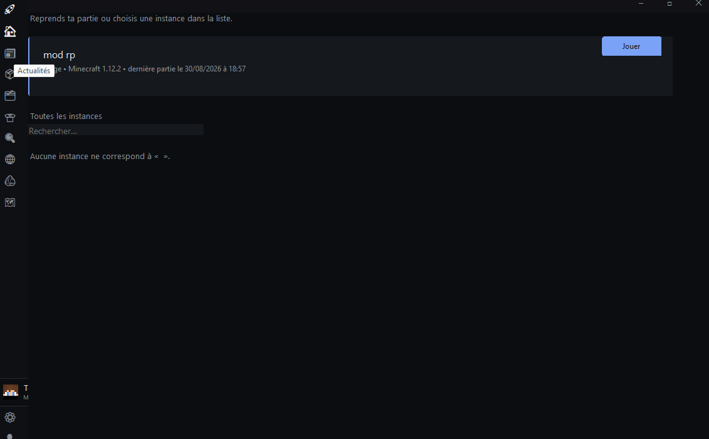

Ton jeu. Tes instances.
Sans usine à gaz.
Team Launcher gère tes instances Forge, Fabric, NeoForge et Vanilla, héberge tes propres serveurs, connecte ton vrai compte Microsoft — le tout dans une fenêtre qui démarre plus vite que le jeu lui-même.
↓ Télécharger Windows 10 / 11 — installateur ~90 Mo

Ce qu'il fait mieux que les autres
Instances sans douleur
Crée, duplique, importe (CurseForge, Modrinth .mrpack) et répare tes instances. Mods, mondes, screenshots : tout est à sa place.
Héberge ton serveur
Vanilla, Fabric, Forge ou NeoForge en 3 clics. Importe ta map, ouvre le tunnel Internet, partage l'adresse. Ta box reste fermée.
Vrai compte Microsoft
Connexion officielle par code d'appareil : pseudo et skin récupérés automatiquement. Aucune configuration, aucun fichier à bricoler.
Pensé pour rester léger
- Démarrage instantané — pas de pub, pas de page d'accueil qui charge 10 secondes
- Fichiers officiels Mojang vérifiés par hash, mis en cache entre les lancements
- Java téléchargé automatiquement selon la version du jeu
- Analyse de crash en clair : tu sais pourquoi ça a planté
- Mises à jour automatiques intégrées
Dernières nouveautés
v4.2.2 — Léger et auto-update
Launcher léger (20 Mo RAM), mises à jour auto via Velopack, mémoire auto-ajustée.
v4.2.1 — Langue sans restart
Changer de langue ne ferme plus Minecraft. La page se rafraîchit instantanément.
v4.2.0 — Bouton Discord
Bouton "Visiter le site" sur la Rich Presence Discord. Correction du crash OpenAL audio.
v4.1.0 — Admin Panel
Télémétrie centralisée, mises à jour auto, installateur Windows avec Inno Setup.
Dernières actualités
Chargement des actualités…